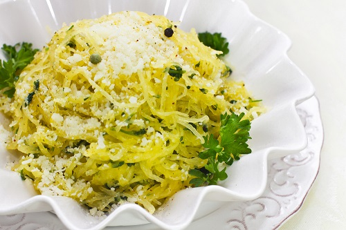
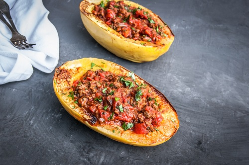

Split the squashes in half and scrape out seeds. Line an oven tray with aluminum foil. Season the spaghetti squash with olive oil, salt, and pepper. Place flesh side down and roast for 30 to 40 minutes until fully cooked. Remove from the oven and let rest until cool enough to handle.
Meanwhile heat the marinara sauce in a large saute pan.
When squash is cool enough to handle, using a large kitchen spoon scrape the strands of squash from the inside of the skin. Toss the spaghetti squash in the pan with the hot marinara for just long enough to get hot. Serve and enjoy.
Garlic Parmesan Spaghetti Squash

Spaghetti squash seasoned with garlic and parmesan cheese.
Prep time:
Cook time:
Total time:
Ingredients
8 tablespoons unsalted butter, divded
3 cloves garlic, minced
1/4 cup vegetable broth
1/2 cup freshly grated Parmesan
2 tablespoons chopped fresh parsley leaves
1 (2-3 pounds) spaghetti squash
2 tablespoons olive oil
Kosher salt and freshly ground black pepper, to taste
Directions
Preheat oven to 375 degrees F. Lightly oil a baking sheet or coat with nonstick spray.
Cut the squash in half lengthwise from stem to tail and scrape out the seeds.* Drizzle with olive oil and season with salt and pepper, to taste.
Place squash, cut-side down, onto the prepared baking dish. Place into oven and roast until tender, about 35-45 minutes.
Remove from oven and let rest until cool enough to handle.
Using a fork, scrape the flesh to create long strands.
Melt 4 tablespoons butter in a large skillet over medium high heat. Add garlic, and cook, stirring frequently, until fragrant, about 1 minute.
Stir in vegetable broth. Bring to a boil; reduce heat and simmer until reduced by half, about 1-2 minutes. Stir in remaining 4 tablespoons butter, 1 tablespoon at a time, until melted and smooth.
Stir in spaghetti squash and gently toss to combine until heated through, about 2 minutes.
Serve immediately, topped with Parmesan and garnished with parsley, if desired.
Spaghetti Squash Stuffed with Tomato and Ground Beef

Spaghetti squash halves stuffed with tomato and ground beef.
Prep time:
Cook time:
Total time:
Ingredients
1 spaghetti squash
1 lb ground beef
Half a green pepper, diced
1 onion, diced
3 garlic cloves, minced
1 portobello mushroom, halved and sliced
1 (28 oz) can diced tomatoes, drained
Salt and pepper
¼ tsp. dried thyme
½ tsp. dried oregano
¼ tsp. cayenne
Parmesan cheese
Directions
Preheat oven to 400F. Stab a knife into the spaghetti squash randomly about half a dozen times to allow steam to release. Place on a baking sheet and cooking for 30-40 minutes, or until a knife can pierce through the skin easily. Slice in half and allow to cool (or if you are crazy, try removing the seeds right away!) Remove seeds. Using a fork, run it inside the squash to create the spaghetti "noodles."
Heat a large frying pan over medium-high heat. Add the beef and cook for a couple of minutes. Add onions, garlic, and mushrooms. Cook until meat is browned. Mix in tomatoes, green pepper, salt, and pepper. Sprinkle with thyme, oregano, and cayenne. Reduce heat and simmer for 10 minutes.
Reduce oven to 350F. Add the sauce on top of your prepared squash halves. Sprinkle with Parmesan cheese if desired. Bake for 10 minutes, or until heated through and cheese is melted.